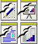

Progetto Documentazione
Questo progetto crea e mantiene la documentazione in Italiano per OpenOffice.org. la documentazione può comprendere guide utenti, domande e risposte, HowTo, esempi, modelli, e materiali per la formazione.
Altre Lingue
Per la documentazione in altre lingue, utilizzate l'elenco seguente.
Documentazione Utente
| Guide Utente | Domande e Risposte | ||
| How To | Guide di Installazione |
Risorse collegate
|  | Esempi & Modelli | Articoli & Recensioni | |
| Altri Progetti OOo | Siti Esterni | ||
| Promozione | Mailing List di Discussione |
Come potete aiutare
- Leggi la pagina su come contribuire al progetto.
Grazie a Open Clip Art Library ed ai volontari OpenOffice.org per la grafica utilizzata in questa pagina.